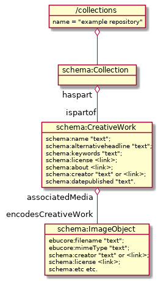
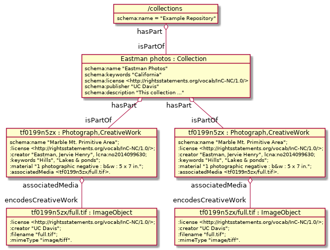

Example 2 - Photographs
This example, drawn from our Eastman collection, contains digitized versions of some historical photographs. In this case, the items in the collection represent physical items – the photographs –, and we are displaying digital versions of these photographs for our users.
In this case we have have metadata that describes the physical item, and associated with this item we have digital representations of the item. In the local filesystem, each item corresponds to a directory, and the binaries are files within that item.
Object Structure
We continue to use Schema.org to organize these items. To that end, we use another predicate of a schema:CreativeWork, the https://schema.org/associatedMedia. This allows one to add https://schema.org/MediaObject(s) to a work. These ppk

In the photo example, each photo is an item in the collection. Each photo has a
digital file that represents the photograph. There is metadata associated with
both the photograph, and the digital representation. The next diagram replaces
the generic objects with some of the actual items. The
corresponding metadata files are

Not that in our local filesystem, we use directories to store non-binary
containers. Any binary or directory has an associated metadata file, we store
locally as {filename}.ttl. These are the data that are included for any
container on the LDP.
Files that are in a directory will be contained by that corresponding container
on the LDP, but no other associations are automatic. It’s the :associatedMedia
<tf0199n5zx/full.tif> predicates associated with the photographs that describe
this relationship.